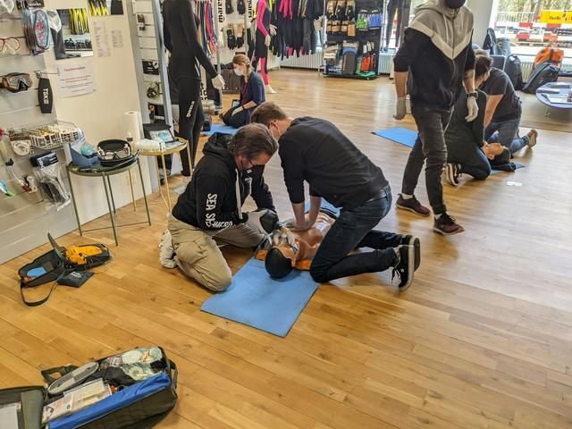
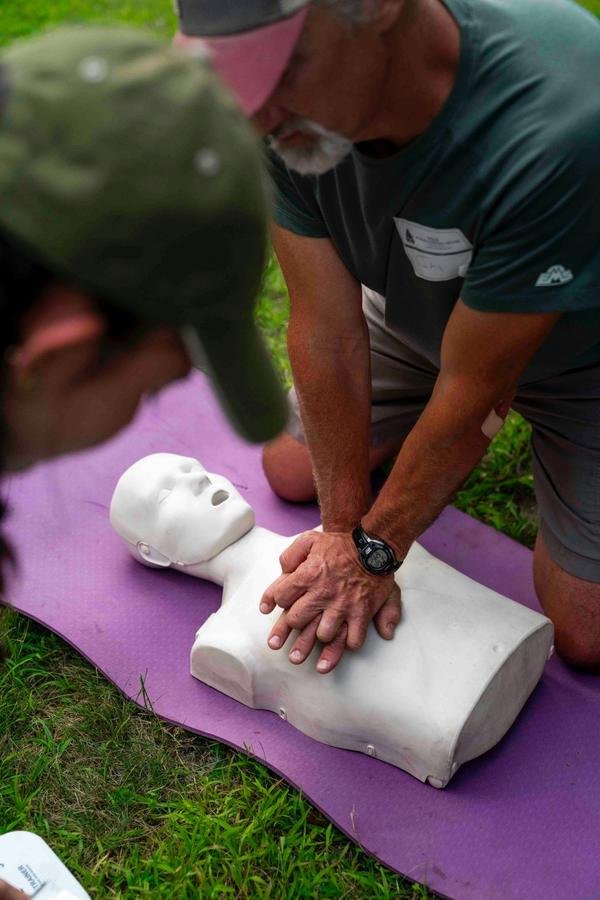
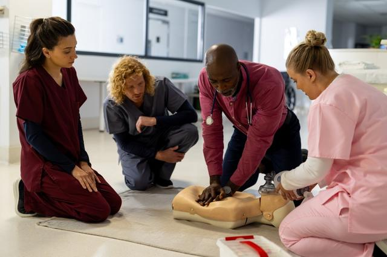
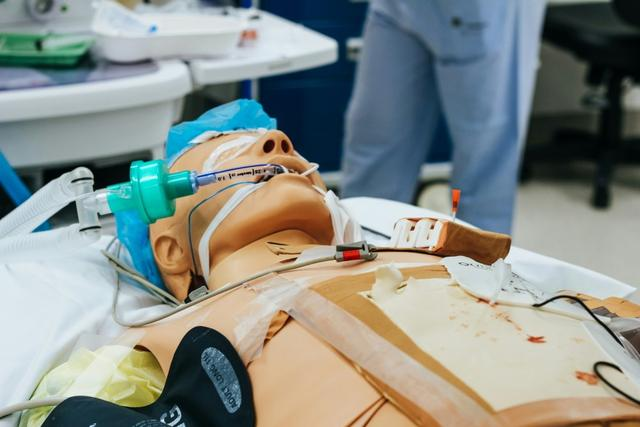

Vendée · 85
Saint-Gilles-Croix-de-Vie
Le fil part de la côte. Pour les soignants du littoral vendéen — cabinets, officines, services de soins à domicile —, Saint-Gilles évite la route jusqu’à la métropole.
Proposer mes dates à Saint-GillesAFGSU 2 · Loire-Atlantique, Maine-et-Loire, Sarthe, Vendée
Tarif public : 450 €385 € TTCpar stagiaire en inter · réglable en 4 fois sans frais
21 h · 3 jours · valable 4 ans
Saint-Gilles-Croix-de-Vie, Nantes, Angers, Le Mans : quatre villes posées sur la Loire et ses affluents, une même exigence. Trois jours en présentiel, des mises en situation simulées et une évaluation qui se construit geste après geste.
Vendée · 85
Le fil part de la côte. Pour les soignants du littoral vendéen — cabinets, officines, services de soins à domicile —, Saint-Gilles évite la route jusqu’à la métropole.
Proposer mes dates à Saint-GillesLoire-Atlantique · 44
En remontant l’estuaire, on atteint la plus grande ville de la région, où se croisent soignants hospitaliers, libéraux et nombreux étudiants en santé. Un point de rendez-vous naturel pour toute la Loire-Atlantique.
Être rappelé·e pour NantesMaine-et-Loire · 49
Au confluent de la Maine, Angers réunit les équipes de l’Anjou, du Saumurois aux Mauges, dans un format identique : groupe de 10 à 12, matériel d’urgence en main.
Ouvrir une date à AngersSarthe · 72
Le fil quitte la Loire et remonte la Sarthe jusqu’au Mans, à portée des professionnels sarthois comme de ceux qui exercent côté Mayenne.
Signaler mon intérêt pour Le MansLe tracé
Quatre villes, un rythme commun : 21 heures de pratique pour des gestes qui restent valides quatre ans. La boucle est bouclée quand votre attestation, délivrée par le CESU, arrive entre vos mains.
De Saint-Gilles-Croix-de-Vie au Mans, par Nantes et Angers.
Calendrier
Orientation
Trente secondes pour savoir s’il vous faut l’AFGSU 1, l’AFGSU 2 complète ou un recyclage, avec le bon lien d’inscription au bout.
Outil d’orientation indicatif. En cas de doute sur votre statut, Wafa tranche avec vous au 07 80 91 23 35.
Programme · 21 heures
Aucune heure ne se passe derrière un écran : la formation est uniquement présentielle, parce que la validation repose sur la pratique et les mises en situation simulées.
10 h 30 · adulte, enfant, nourrisson
Protection·alerte au 15 ou au 112·obstruction des voies aériennes·hémorragies·victime inconsciente qui respire·arrêt cardiaque, RCP et DAE·matériel d’urgence : chariot, oxygénothérapie
7 h · repérer, protéger, transmettre
Malaises·traumatismes osseux, cutanés, crâniens et du rachis·brûlures·immobilisation, relevage, brancardage·accouchement inopiné·hygiène et risque infectieux·transmission du bilan
3 h 30 · penser à plusieurs
ORSAN·plan blanc·plan bleu·afflux de victimes·NRBC-E·évacuation et confinement·soutien médico-psychologique

7 h d’urgences vitales.
3 h 30 d’urgences vitales, puis 3 h 30 d’urgences potentielles.
3 h 30 d’urgences potentielles, puis 3 h 30 consacrées aux situations sanitaires exceptionnelles.
Répartition indicative, ajustée par le formateur selon le groupe.



AFGSU 1 ou AFGSU 2
290 € TTC
450 € 385 € TTC
Public & prérequis
L’AFGSU 2 s’adresse aux professions de santé de la 4e partie du Code de la santé publique et à leurs étudiants. Le seul prérequis : appartenir à ce public. Inutile, donc, de passer par l’AFGSU 1 avant.
médecinsinfirmiersaides-soignantssages-femmeskinésithérapeutespharmacienspréparateurs en pharmacieambulanciersauxiliaires de puériculturemanipulateurs radiochirurgiens-dentistesAES / AMPassistants de régulation médicaleassistants médicauxpréleveurs sanguinsauxiliaires ambulanciers
Par une évaluation continue tout au long des trois jours, avec présence intégrale obligatoire. Il n’y a pas d’examen final séparé. C’est le CESU qui délivre l’attestation, puisque nous formons dans le cadre d’une convention passée avec le CESU 93.
Arrêté du 30 décembre 2014 modifié en 2019 et 2021. L’attestation donne l’équivalence PSC (arrêté du 23 août 2019) mais ne vaut pas SST.
Recyclage · 7 h
Votre attestation monte, se maintient, puis arrive à échéance au bout de quatre ans. Le recyclage de 7 heures se suit avant cette date ; après, il faut refaire les 21 heures. Inscrivez-vous 3 à 6 mois avant, joignez l’attestation en cours, et demandez-nous le tarif du recyclage.
L’arrêté du 20 février 2026 exige une AFGSU 2 valide pour le diplôme d’État infirmier des étudiants entrés à la rentrée 2026.
De nouvelles recommandations ont été publiées en mars 2026.
Financement
L’établissement mobilise son plan de développement des compétences.
L’opérateur de compétences dont relève votre structure privée.
Si vous relevez de la fonction publique hospitalière.
Pour les libéraux, selon ses conditions de prise en charge.
Financement personnel, avec un règlement possible en quatre fois sans frais.
Une précision honnête : le CPF n’est en principe pas éligible à l’AFGSU.
Intra-établissement
Hôpital, clinique, EHPAD, cabinet, officine ou centre de santé : la session se déroule dans vos locaux, pour un groupe de 10 à 12 de vos professionnels, sur des dates choisies avec vous. Le tarif se fixe sur devis.
De Cholet à Laval, de La Roche-sur-Yon à Saumur, et partout en France.
Recevoir un devis pour mon équipeParoles de stagiaires
[Avis stagiaire à insérer]
[Avis stagiaire à insérer]
Questions fréquentes
Oui. Depuis l’arrêté du 20 février 2026, les étudiants entrés à la rentrée 2026 doivent détenir une AFGSU 2 valide pour obtenir le diplôme d’État infirmier. Pensez à la planifier pendant votre cursus, avec votre certificat de scolarité comme justificatif.
Ce sont les deux villes les plus proches de la Mayenne parmi nos centres. Si plusieurs collègues de votre maison de santé sont intéressés, une session intra dans vos locaux peut aussi s’envisager.
À Saint-Gilles-Croix-de-Vie. Les dates y sont ouvertes à la demande : laissez vos disponibilités et nous vous rappelons sous 48 h avec une proposition.
Parce que les sessions des Pays de la Loire s’organisent au cas par cas, en fonction des inscrits : contactez-nous par téléphone ou via le formulaire, et nous lançons la démarche avec vous.
Non, ce sont deux formations distinctes. Les aides-soignants suivent l’AFGSU 2 (21 h), le personnel d’accueil l’AFGSU 1 (14 h). Les deux peuvent être organisées en intra dans l’établissement, par groupes de 10 à 12.
Oui, les préparateurs en pharmacie font partie des professions visées. Vous pouvez vous inscrire directement à l’AFGSU 2.
Niveau 2. Les assistants de régulation médicale figurent dans le public de l’AFGSU 2, au même titre que les assistants médicaux ou les préleveurs sanguins.
Elle reste valable quatre ans, donc jusqu’en 2027 à la date anniversaire. Visez une inscription 3 à 6 mois avant cette échéance : le recyclage de 7 h doit impérativement être suivi avant qu’elle ne tombe.
En 3 h 30 : le dispositif ORSAN, le plan blanc et le plan bleu, l’afflux de victimes, les risques NRBC-E, l’évacuation et le confinement, ainsi que le soutien médico-psychologique.
Non. L’AFGSU 2 se suit entièrement en présentiel : sa validation repose sur la pratique et les mises en situation simulées, impossibles à reproduire à distance.
Pas d’examen final séparé. Le formateur évalue en continu, sur les trois jours, et la présence doit être intégrale pour que l’attestation soit délivrée.
C’est d’abord à votre employeur de la prévoir dans son plan de développement des compétences, éventuellement épaulé par l’OPCO de la branche. Un financement personnel reste possible, en 4x sans frais.
En principe, non : l’AFGSU n’est pas éligible au CPF. Les solutions passent plutôt par l’employeur, l’OPCO, l’ANFH ou le FIF-PL selon votre situation.
Inscription
Wafa reprend votre demande, vérifie que la formation correspond à votre profession et vous propose une date dans la ville choisie.
Votre demande remonte jusqu’à Wafa, qui vous rappelle pour fixer la ville, la date et le financement. Une urgence d’agenda ? Le 07 80 91 23 35 reste ouvert.